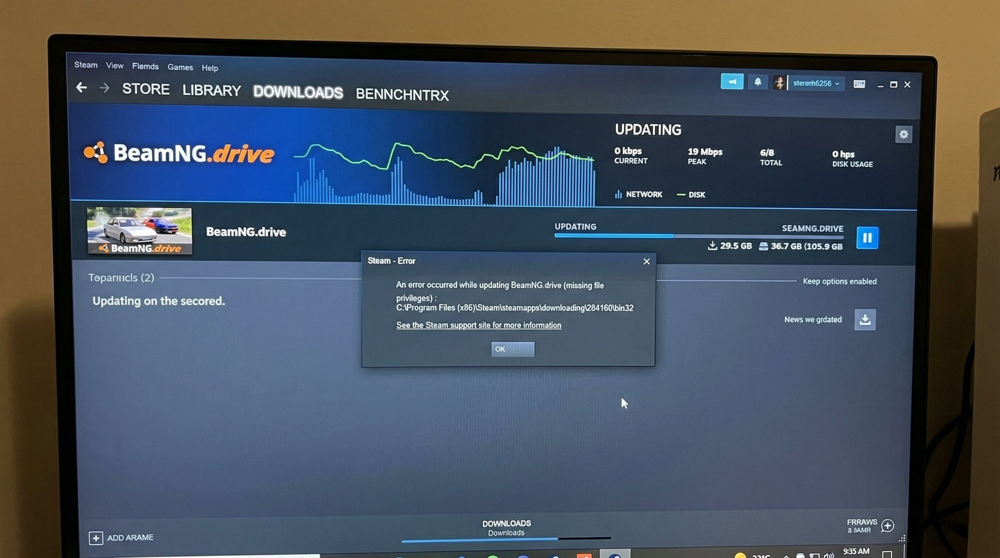
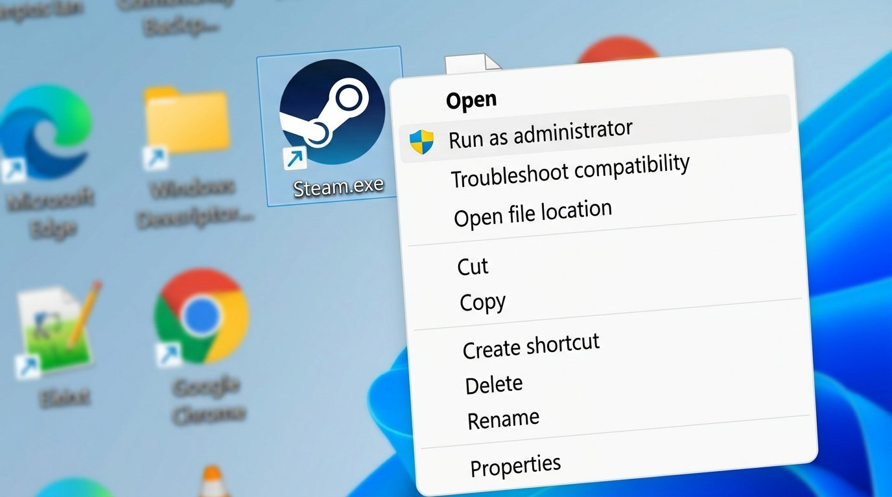
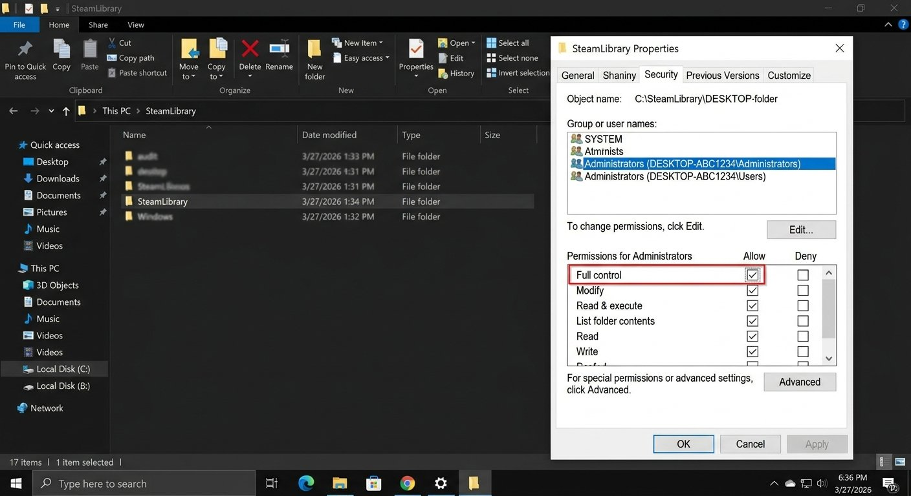
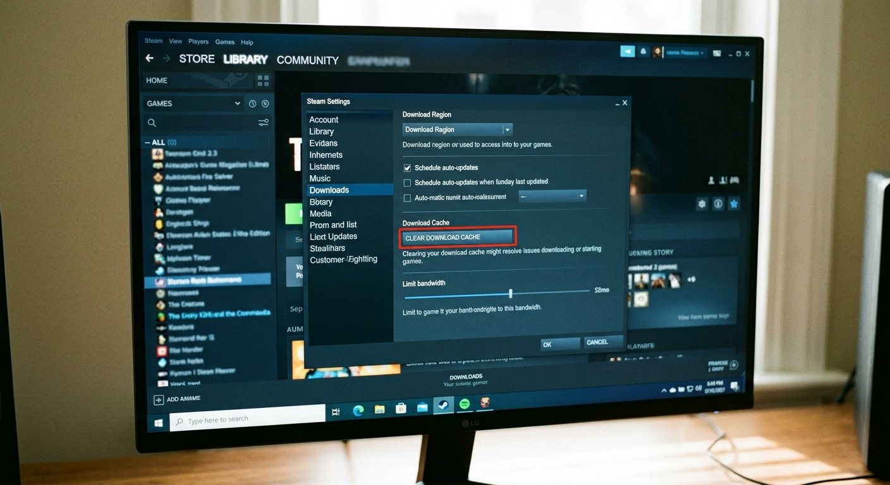

What Is the “Missing File Privileges” Error?
You clicked update on a game and Steam threw up “Missing File Privileges” and just stopped. It’s not a virus, it’s not a corrupted game, and you don’t need to reinstall anything — try these fixes first and you’ll most likely be downloading again within five minutes.
The “Missing File Privileges” error means Steam tried to write or modify a file on your computer and Windows blocked it. This happens at the operating system level — Windows is protecting a folder or file from being changed, and Steam doesn’t have the permission to override that. It’s essentially Windows and Steam having a disagreement about who’s allowed to touch what. The good news is — this is almost always fixable at home.

Why Does This Happen?
There are four main reasons Steam hits this permissions wall:
- Steam isn’t running as Administrator. Windows 10 and 11 have strict permission layers, and Steam sometimes needs elevated rights to write game files — especially if your Steam library is installed on a drive other than C:, or inside a folder that Windows considers protected. Without administrator access, Steam hits a wall the moment it tries to create or overwrite files during an update.
- Antivirus or Windows Defender is blocking Steam. Security software — including the built-in Windows Defender that comes on most laptops — often flags Steam’s update process because it writes a large number of files very quickly. The antivirus sees that behaviour as suspicious and quietly blocks the file operation without telling you clearly. Steam then reports it as a permissions error because, from its point of view, access was simply denied.
- The Steam library folder has wrong permissions set. This happens more often than you’d think, especially after a Windows update, a system restore, or if you moved your Steam folder manually from one drive to another. The folder ends up with permission settings that exclude your current Windows user account from full read-write access. Steam can read the files but can’t modify them, which breaks updates completely.
- A previous incomplete update left locked files. If Steam was interrupted mid-update — by a power cut, a forced shutdown, or the PC going to sleep — it can leave certain files in a locked state. On laptops during a power interruption, this kind of mid-download interruption is genuinely common. The next time Steam tries to update, it finds those files already locked and throws the privileges error.
How to Fix Steam “Missing File Privileges” Error — Step by Step
Start at Step 1 and move down only if the problem persists. Running as Administrator fixes this for the majority of people — don’t rush past it.
This is the single most effective first move and clears the error for most users immediately.
- Right-click the Steam icon in the system tray (bottom-right of your taskbar) and select “Exit” to close Steam fully — not just the window.
- Right-click the Steam shortcut on your desktop and select “Run as Administrator.”
- If you don’t have a desktop shortcut, navigate to C:\Program Files (x86)\Steam, right-click Steam.exe, and choose “Run as Administrator.”
- Once Steam opens, try the update again.
You should see the download bar start moving normally — that’s the sign this worked. If it does, move to Step 2 to make the fix permanent so you don’t have to repeat this every session.

If Step 1 worked but you don’t want to right-click every time, set it permanently so Steam always launches with the permissions it needs.
- Right-click the Steam shortcut and select Properties.
- Click the Compatibility tab.
- Check the box labelled “Run this program as an administrator.”
- Click Apply, then OK.
Every time you open Steam from now on, it’ll already have the permissions it needs. No more right-clicking, no more privileges errors caused by missing elevation.
If the first two steps didn’t resolve it, the folder itself has incorrect permission settings — a common result of moving your Steam installation or after a Windows update.
- Open File Explorer and navigate to your Steam library — usually C:\Program Files (x86)\Steam or the drive letter you installed it on.
- Right-click the Steam folder and select Properties.
- Go to the Security tab and click Edit.
- Find your Windows username in the list of group or user names.
- Make sure “Full Control” is checked in the Allow column.
- If it’s not, check the box, click Apply, and let Windows propagate the changes to all subfolders.

Security software silently blocking Steam’s file operations is one of the most common — and least obvious — causes of this error.
- Pause Windows Defender or your third-party antivirus (Kaspersky, Quick Heal, McAfee, etc.) for 15 minutes.
- Try the Steam update immediately — don’t browse to other sites while protection is paused.
- If the update goes through, the antivirus was the cause.
- The permanent fix: open your antivirus settings and add Steam.exe and your entire Steam library folder as exclusions/exceptions. This lets Steam operate normally without disabling your protection.
Steam has a built-in repair tool that fixes permission mismatches and clears locked files left by interrupted downloads — use it before reaching for more drastic options.
- Open Steam and go to Settings → Downloads → Steam Library Folders.
- Click on the library that contains the game showing the error.
- Click the three-dot menu (or the small menu icon) next to the library.
- Select “Repair Library Folder.”
- Steam will scan the folder, fix any permission mismatches, and report when complete.
- Try the game update again after this finishes.
This also handles the locked-file problem caused by interrupted downloads — it’s the cleanest built-in fix for that specific scenario.
This step sounds unrelated to a permissions problem, but a corrupt download cache can cause Steam to repeatedly try to write a bad file and keep getting blocked. It’s quick and harmless — worth doing before anything more involved.
- Go to Steam Settings → Downloads.
- Scroll down and click “Clear Download Cache.”
- Steam will log you out and restart automatically.
- Log back in and attempt the update again.

When You Should Speak to Steam Support
If you’ve tried all six steps and the error persists on one specific game, the problem may be on Valve’s side rather than your PC.
- Verify game files first. Right-click the game in your Steam library, go to Properties → Local Files → “Verify integrity of game files.” This checks every file against Steam’s servers and replaces anything that’s corrupted or missing.
- If verification also fails repeatedly. Raise a ticket with Steam Support directly at help.steampowered.com. This happens after major game patches when Valve’s servers push a bad build — it’s rare, but it does occur and it’s something only their backend team can fix.
- The error appears on multiple games. If you see Missing File Privileges on several different games, it’s definitely your PC’s permissions setup rather than a single game issue. Revisit Steps 1–3 more carefully.
- There’s no cost involved. Steam Support is free. When you raise a ticket, provide the exact error message and the file path it shows — that information helps their team diagnose it much faster.
Quick Summary
| Fix | Difficulty | Time Needed |
|---|---|---|
| Relaunch Steam as Administrator | Very Easy | 1 minute |
| Set Steam to always run as Administrator | Very Easy | 2 minutes |
| Fix Steam library folder permissions | Easy | 5 minutes |
| Temporarily disable antivirus & add exclusions | Easy | 5 minutes |
| Repair Steam library folder | Easy | 3 minutes |
| Clear Steam download cache | Very Easy | 1 minute |
The “Missing File Privileges” error sounds serious but it’s really just Windows and Steam not agreeing on who owns the files. The Administrator relaunch and library permissions fix together clear this for the vast majority of people. If you’ve gone through every step and one particular game is still stuck, it’s almost certainly a server-side file issue — and Steam Support handles those quickly once you raise a ticket.
Fixed? The Administrator relaunch (Step 1) combined with adding Steam as an antivirus exception (Step 4) is the combination that keeps this error from ever coming back on future updates.